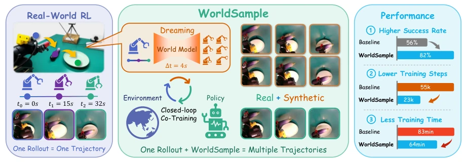
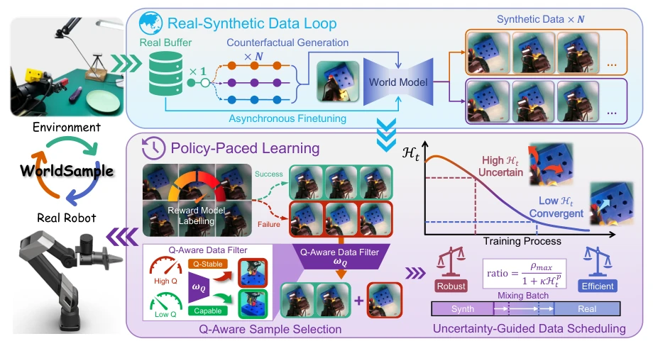
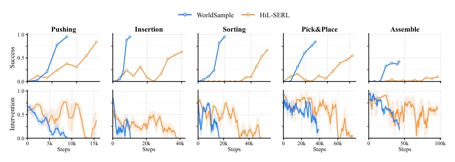
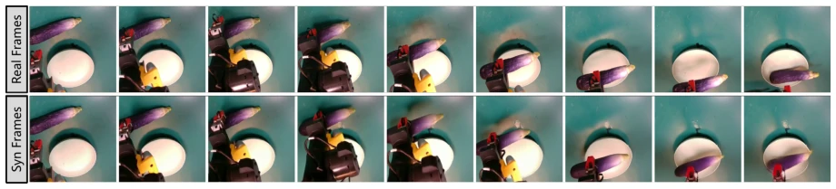
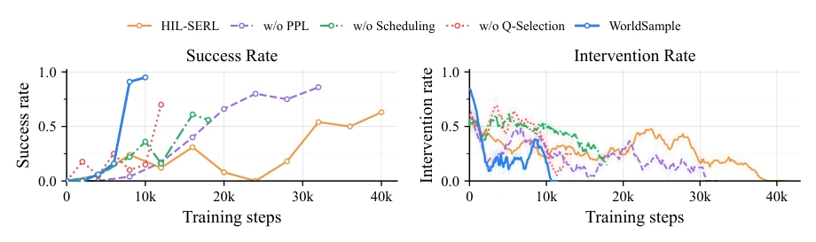
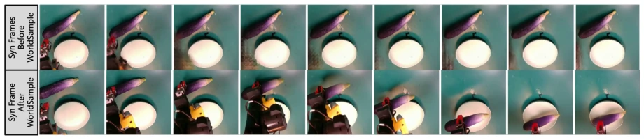
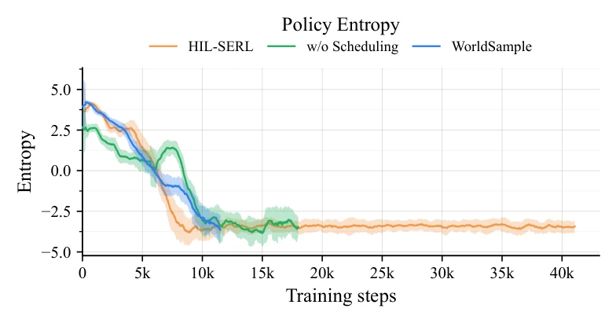

This paper attempts to address the biggest pain points of real-world reinforcement learning (RL): too expensive, too slow, and too fragile. WorldSample's core idea is straightforward: since real-machine trial-and-error costs are high, use a World Model to "dream" based on real-machine data, but the key is how to ensure the dream doesn't collapse. The authors propose a "counterfactual trajectory generation" strategy, perturbing actions near real rollouts, rather than guessing blindly, which is much more reliable than pure hallucination generation. More cleverly, Policy-Paced Learning (PPL) acts like an old TCM doctor taking a pulse: feed less synthetic data when the policy is uncertain, and more once stable, to prevent Q-values from being artificially inflated. However, this method is currently a delicate task of "single-task single-scenario", generalization has not been verified, and the quality bottleneck of the world model itself is not thoroughly solved, after all, no matter how beautiful the "dream" is, it is still a dream. Overall, it is a good attempt to squeeze out data efficiency under the existing framework, suitable for robot teams that do not want to change parts every day.
Although imitation learning (IL) can learn complex skills, it is limited by the distribution coverage of demonstration data and tends to fail when encountering out-of-distribution states [16, 24]. Reinforcement learning (RL) can theoretically break through this limitation through trial and error, but deployment on real machines faces huge rollout cost bottlenecks [8, 21, 23]. Physical interaction is not only slow but can also lead to hardware wear or safety accidents, and each rollout only reveals one path. Existing methods attempt to reduce costs at different points in the data pipeline: demonstration-based methods rely on expensive human intervention [1, 6, 17]; traditional data augmentation ignores physical reachability [12, 22]; world model-based methods (such as VLAW [7], WMPO [5]) can synthesize experience, but easily deviate from the physical distribution, producing visual hallucinations and contact dynamics artifacts, leading to high noise in policy learning. Therefore, there is an urgent need for a framework that can both utilize synthetic data to expand the experience distribution and anchor physical dynamics through real interaction, to balance sample efficiency and safety.

Figure 1. WorldSample overview. WorldSample expands real-robot rollout into multiple physically grounded synthetic trajectories with an action-conditioned world model, forming a real-synthetic training loop that improves success rate and reduces interaction cost.
WorldSample contains two tightly coupled components: the real-synthetic data loop and policy-paced learning (PPL). The data loop starts with real rollouts collected through online interaction, these trajectories are used for both policy training and as anchors for world model generation. The world model generates synthetic transitions based on real observations and counterfactually sampled action sequences (Counterfactual Trajectory Generation), i.e., local perturbation sampling near real action sequences, rather than random priors, ensuring generated trajectories are physically feasible. The generation process is executed asynchronously to avoid blocking real-time control, and the world model is continuously post-trained via online rollout data to align distributions. PPL is responsible for regulating the use of synthetic data: Q-Aware Sample Selection distinguishes successful and failed trajectories through reward model labels, balancing positive and negative sample ratios to prevent Q-value estimates from biasing towards optimistic or conservative; Uncertainty-Guided Data Scheduling dynamically adjusts the proportion of synthetic data based on policy entropy (Actor Entropy), reducing synthetic data introduction when the policy is uncertain, and gradually increasing it after stabilization. This mechanism separates "when to use" and "how much to use" of synthetic data, both expanding the training distribution and suppressing hallucination noise.

Figure 2. WorldSample pipeline. WorldSample closes a real-synthetic data loop between physical rollouts, world-model generation, and policy improvement, while Policy-Paced Learning (PPL) regulates the composition and usage of synthetic data during training.
Evaluated on the Galaxea A1X robotic arm across 5 manipulation tasks (push, insert, sort, grasp, assemble). Comparison baselines include HIL-SERL [21], VLAW [7], and WMPO [5]. Results show WorldSample improved average success rate from 56% to 82%, reduced training steps by 59% (from 56k to 23k), and shortened training time by 23%. In contact-rich insertion tasks, success rate reached 95%, and real interaction steps were reduced by 50%. World model adaptation experiments show that combining online rollout fine-tuning significantly improved video fidelity (PSNR increased from 8.5 to 29.9). Ablation studies verified the necessity of PPL: removing the scheduling mechanism caused success rate to drop to 61%, removing Q selection dropped to 76%, proving that quality control and scheduling of synthetic data are crucial for stable training.

Figure 3. Success Rate and Intervention Rate for each task.

Figure 4. Comparison between real and generated video frames.

Figure 5. Success Rate and Intervention Rate on each ablation setting.

Figure 7. World model generation quality comparison. Fine-tuning the world model with both demonstrations and online rollouts improves video generation quality compared with demonstration-only fine-tuning.

Figure 8. Entropy-guided scheduling analysis. Actor entropy tracks the policy’s uncertainty during training and determines how strongly synthetic trajectories are introduced. This mechanism prevents early-stage synthetic bias while allowing generated data to improve sample efficiency after the policy becomes more stable.